Onduo Mobile App
Duration: 2018-2019
My Role: UI/UX Designer
A program to help people manage their Type 2 diabetes

Long Story Short
Onduo, a joint venture between Verily and Sanofi, is a virtual diabetes clinic. The mobile app supports its members with resources and tools to help them manage their disease. In order to do so, health coaches would sort through hundreds of google docs to find resources. They would then have to copy that content & send to their members via a messaging window. We needed to create a way to automate and deploy these strategies without coach intervention.
In the future world, the product automates the personalization process to help people experiment with different diabetes management tools to find what works for them and incorporate them into their lives.
The key challenge for me was to explore and design UI for the new challenge framework. And to do so, I needed to work on more urgent project—creating a design system.
The Team
7 designers, 2 product managers, 4 engineers, 1 behavioral scientists, 2 UX researchers, 1UX writer
My Role as Designer
Collaborating with cross-functional teams, I contributed to the launch of the first Challenge framework by executing wireframes, prototypes, design system, component library, modular illustration system, etc.
Up until now, I support the team to evolve the features and address customer pain-points related to behavior modification and skill building exercises.
Understanding Our Targeted Audience
To design the right thing and design it right, I must understand who I am designing for. More than 30 million Americans have diabetes (about 1 in 10), and 90% to 95% of them have type 2 diabetes, and people with diabetes have multiple symptoms which vary in individuals' health condition. The example of common symptoms are:
Numbness or tingling in the feet or hands
Blurred vision
Feeling tired
The Challenge: 500+ Pages of New Strategies
Our challenges were digitizing over 500 pages of lessons and suggested activities, so called Onduo Challenge. First, we had to create means to organize the behavior change approach, which were broken down into 5 pillar:
Eat Well
Eating Healthy
Be Active
Encouraging Movement & Exercise
Take Care
Doctor Visits & Taking Medication As Prescribed
Ease Stress
Healthy Coping of Life's Stresses
Monitor
Mornitoring and tracking health data
The team combed through those 500+ pages of content & strategies the coaches were pulling from to create program maps for each pillar.
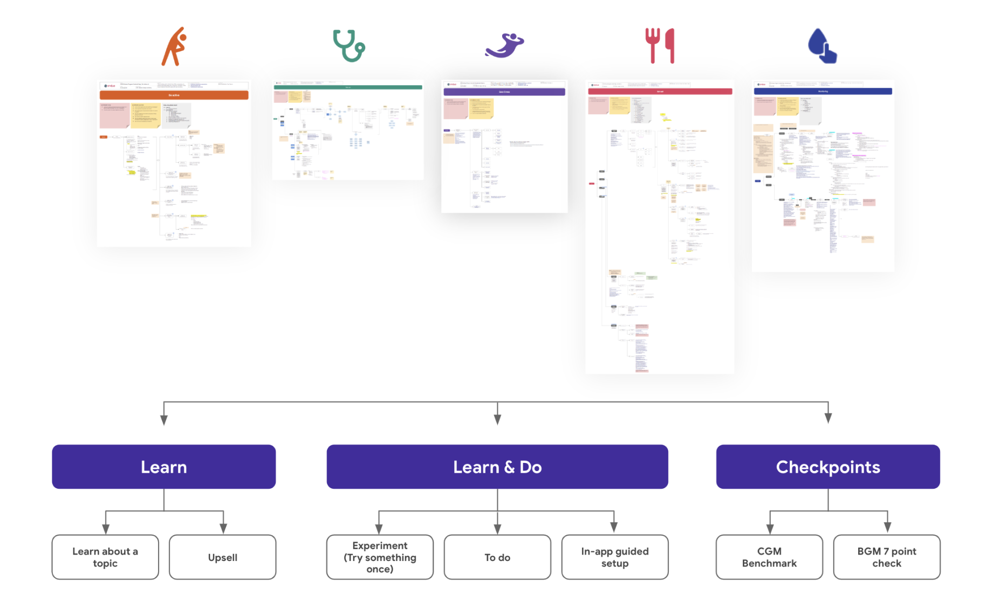
How might we build a scalable and effective design solution for the 500+ pages of new strategies?
Design System was Much Needed Than Ever
Multiple players shared different opinions on how the interface should interact and look like. Building the interface from scratch was hard, because there was any defined rules and patterns we could use or refer to. Consequently, the app ended up becoming Frankenstein.
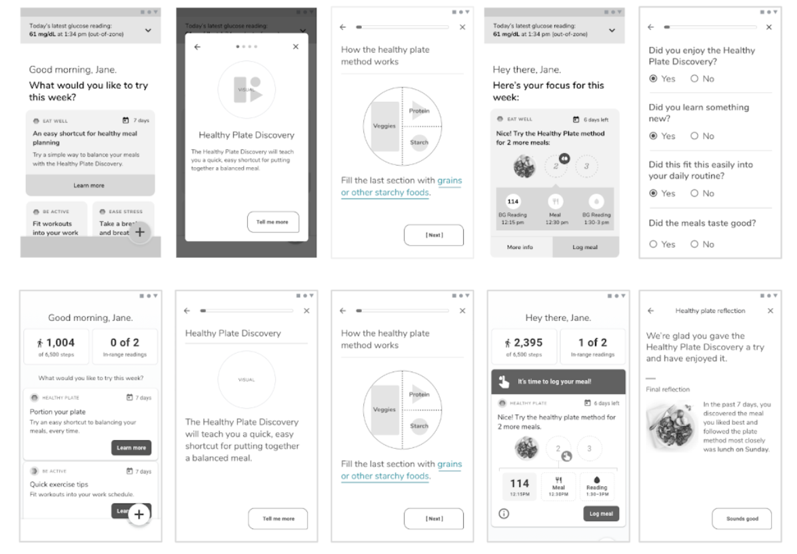Moving forward, we should build a design system for improving the team collaboration and the product quality. We could save redundancy of re-inventing the component that varies in minor details, if we had one standardized component structure that could be used across the teams.
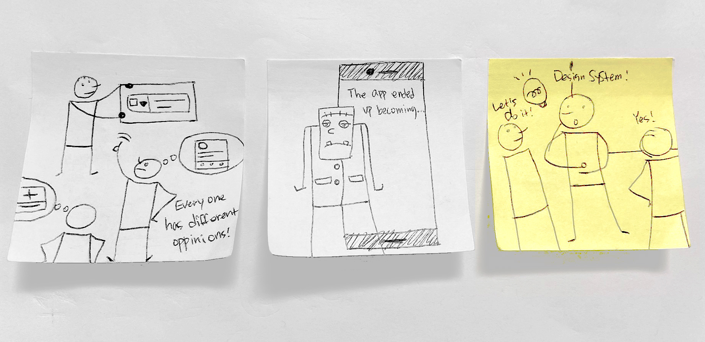App Audit
I teamed with other designers to dive deeper into the process. We audited the whole app and individual components to find inconsistencies and to prioritize what components needed to be designed first to satisfy our needs. Doing this, we were also able to recognize where the experience breaks.
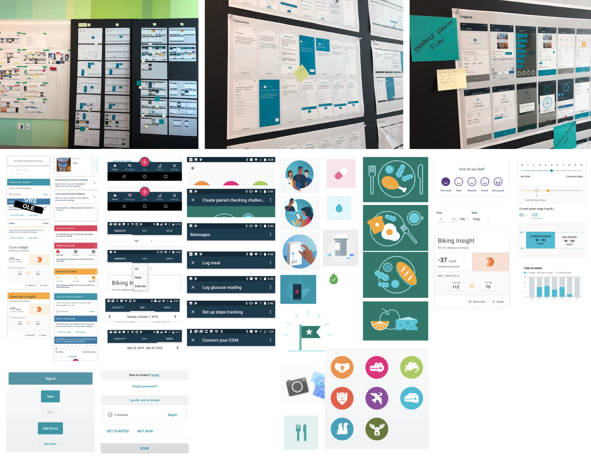Design Principles
And then, we defined visual experience principles that align with our product principles.
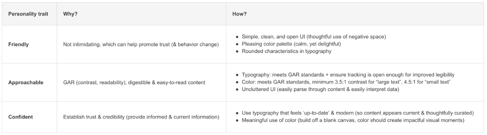Laying Foundation
Our system is based on the principles of Material Design (atomic design). The key idea behind the methodology is being small can be combined into larger molecular structures. The foundation loosely defined our typography, colors, iconography, spacing, navigation, and information architecture. However, from time to time we had to break the rules (Material Design standards), such as font-size and button heights, to keep the accessibility in the highest priority for our targeted customers.
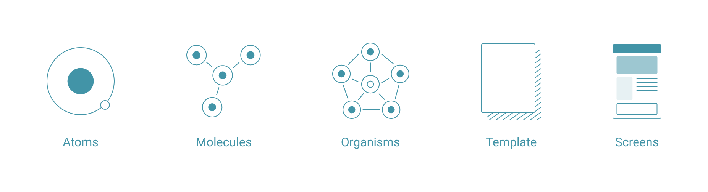
Componentized Modular Illustration
From research, we found that our user group tends to rely heavily on visuals to understand the content. After discussions, we decided to use illustrations mainly and use photos for specific examples due to following reasons:
- The visual requires many customizations depending on the content
- Buying stock photos is expensive
- Finding the perfect stock photos is difficult
- Illustration is more flexible and easily modifiable
- We can use illustrations to re-enforce our brand
I was in charge of creating illustrations. To make it more effective and scalable, I proposed creating modular illustrations. Since I created the initial set of 100+, the illustration library has naturally evolved as the product grows and with other designers' contributions. 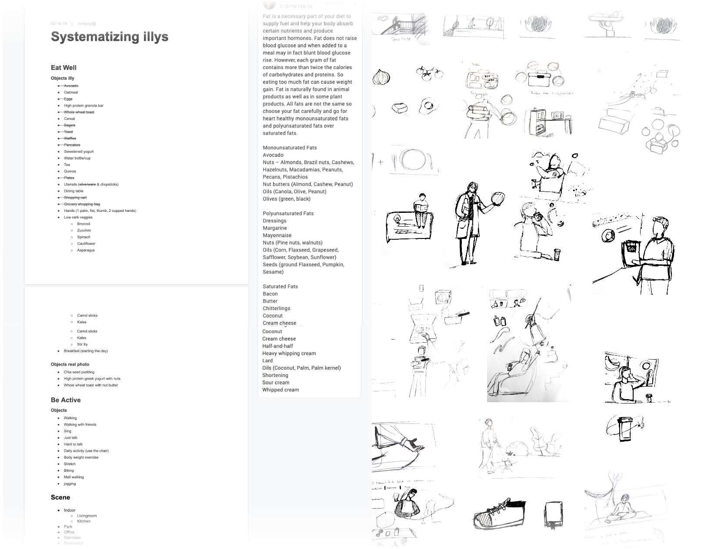 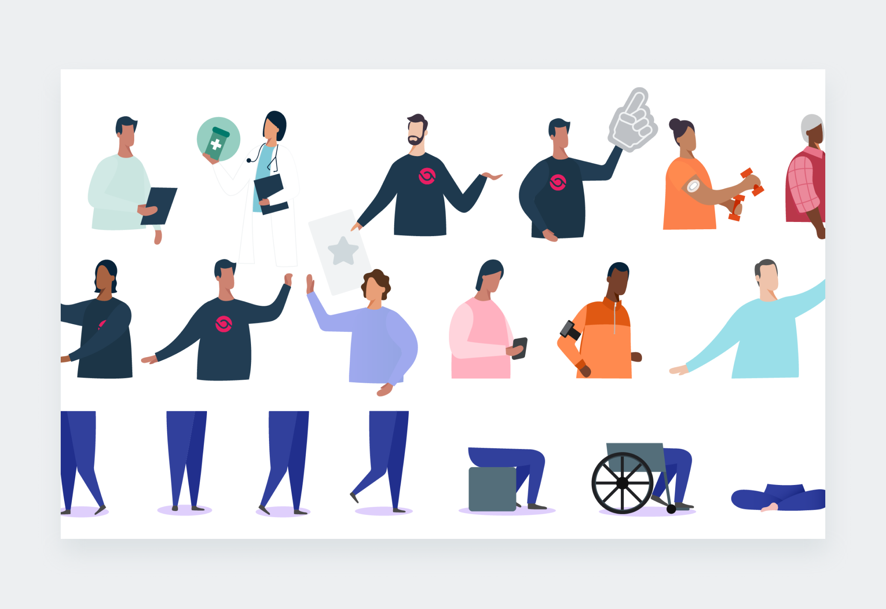 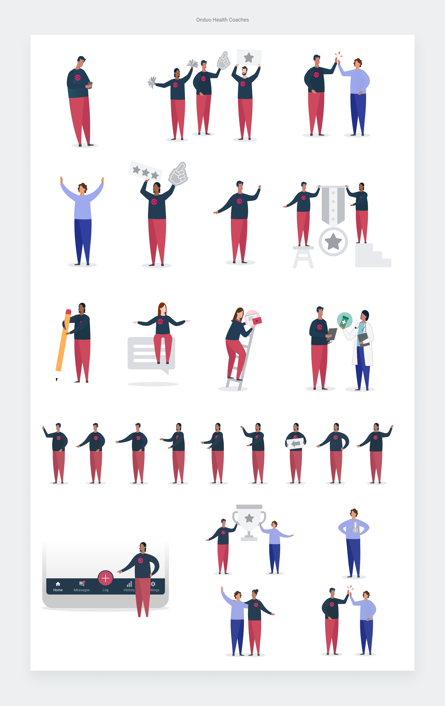 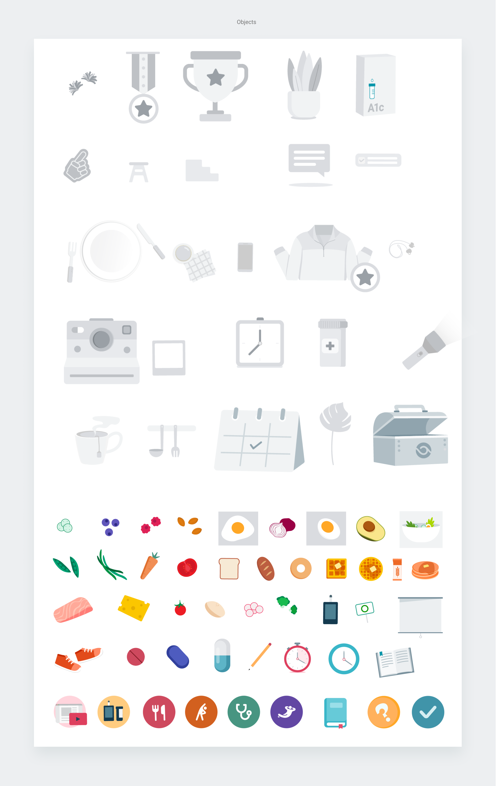
Reviews & Feedback
The biggest challenge that I faced throughout the project was balancing designs with feedback, while collaborating with broader team. Since this new system would touch every part of our product, I needed to coordinate and get buy-in from the entire team. This was hard.
Managing feedback was even more challenging because everyone has different viewpoints. We spent a disproportionate amount of time debating design decisions, when there wasn’t data that helps drive decision.
“Managing feedback was even more challenging because everyone has different viewpoints.”
Another designer and I started documentation to help alleviate the data crutch and better articulate design rationale. Doing this was time consuming, but saved tons of time as the project progressed.
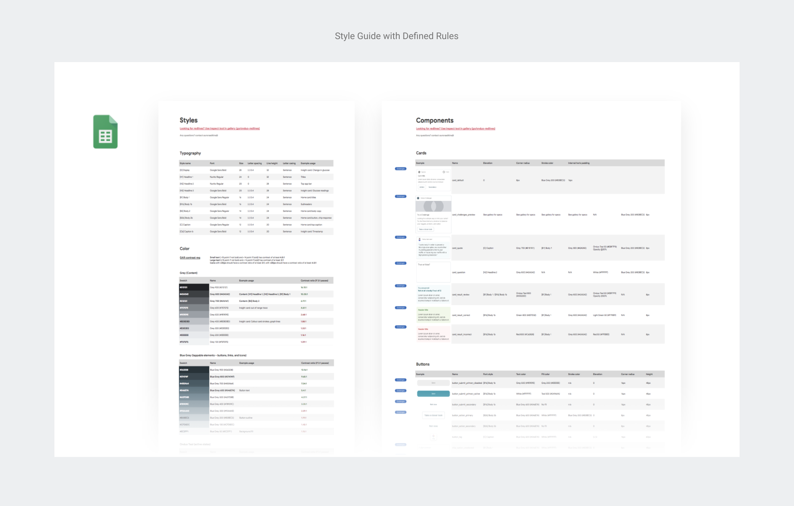 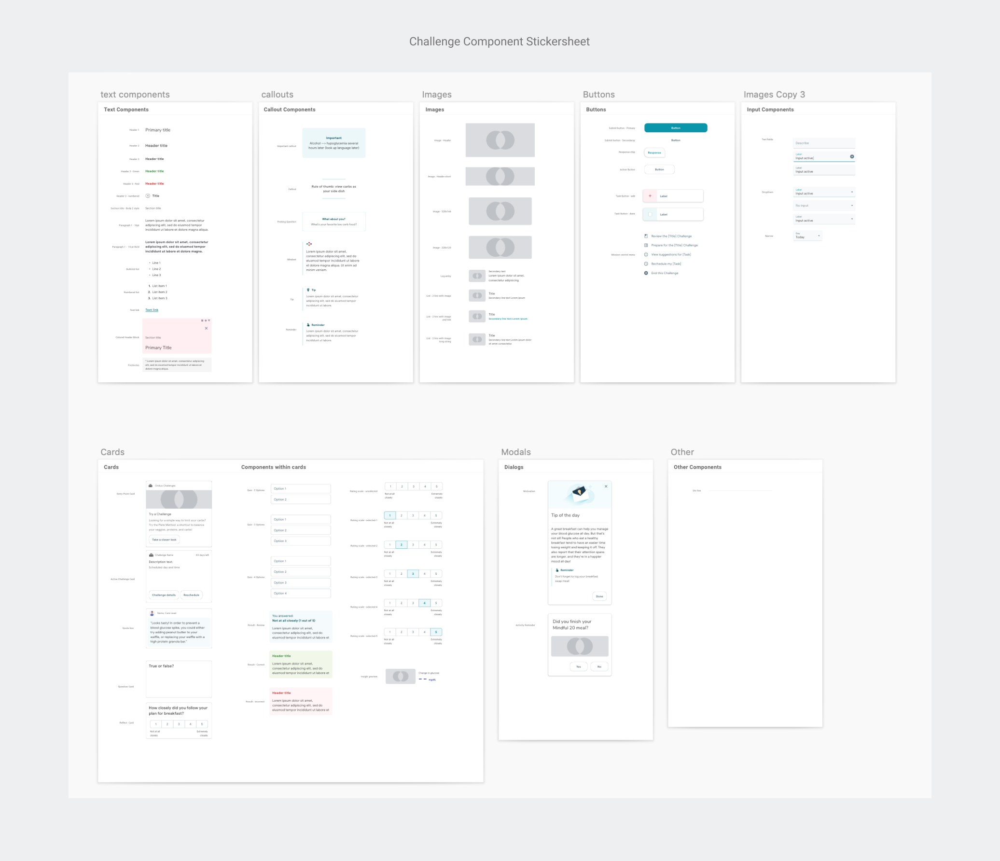 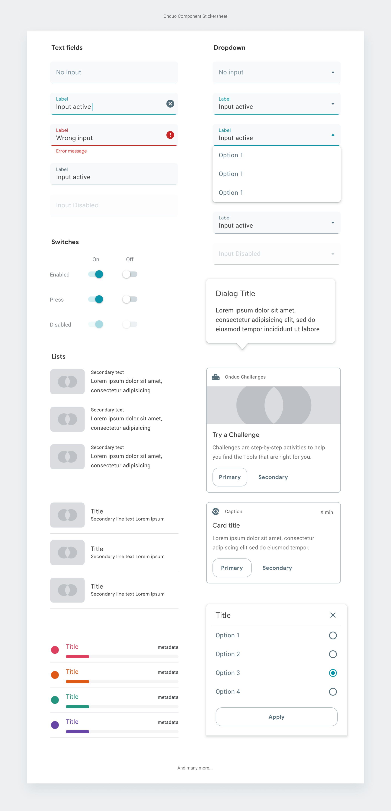Impact
First of all, the initial set of design system was created and engineers has implemented them based on the priority. One of our software developer commented that "It(the impact) is kind of hard to measure. It's also one of those things where the simplification of the design has led to fewer issues, fewer bugs, etc. At the end of the day, it has reduced complexity and increased stability."
The first Challenge V1 (Plate Method Challenge) was also successfully launched and followed by multiple other Challenges (e.g. Get Moving Challenge and Breakfast Swap Challenge).

Challenge Template V1

Launched Lesson & Activity Using the Template. There are many more screens.
Fianlly, we don’t disproportionately use our time talking about the right font-size, button types, or use of components anymore, but we use the time to develop the right product strategy and solutions that delight our users.
"It(the impact) is kind of hard to measure...the simplification of the design has led to fewer issues, fewer bugs, etc. At the end of the day, it has reduced complexity and increased stability."
Ben L., Software Engineer at Verily.
+24%
More reached for the first Challenge in 5 months than 1 year
+227%
More reached for the second Challenge in 1 month than 1 year
-28%
Expiration went down from 69% to 41%
-3%
Cancellation went down from 8% to 5%
+28%
Competion rate went up from 22% to 54%
-5.2 d
Time to completion went from avg of 6.2 days to 1 day.